SELECTED RESIDENTIAL INTERIORS · MUMBAI
Spaces shaped around everyday life.
A collection of residential interior design visualisations exploring materiality, storage, lighting and how each room supports the people who use it.
These images are 3D design visualisations used to communicate proposed interior concepts. They are not photographs of completed construction.
01 / LIVING + DINING
Open-plan living
Connected spaces for conversation, dining and relaxed family time, with clear movement between zones.
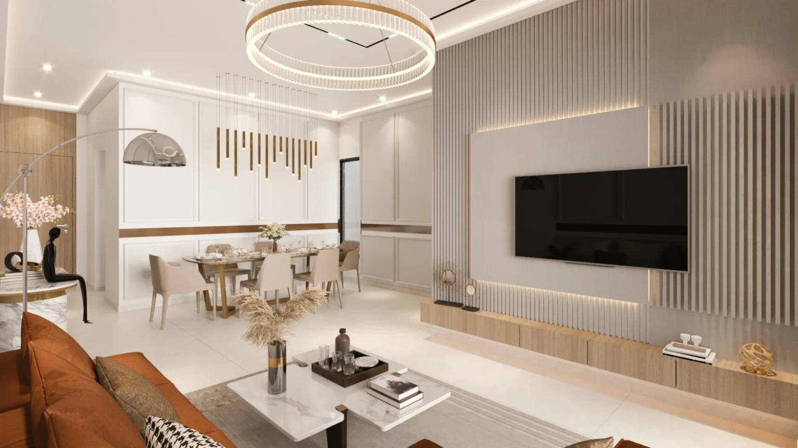
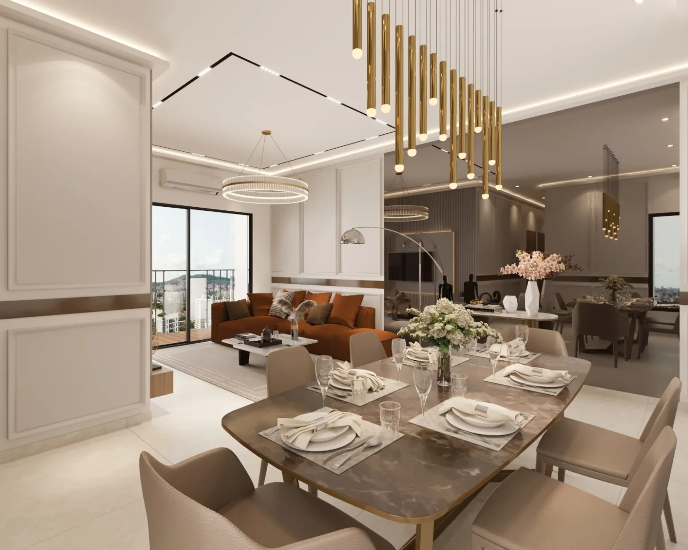
02 / BEDROOM
Restful bedrooms
Warm finishes, integrated storage and layered feature walls that bring calm and function together.

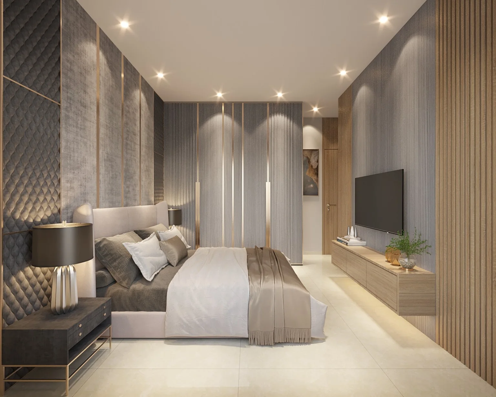
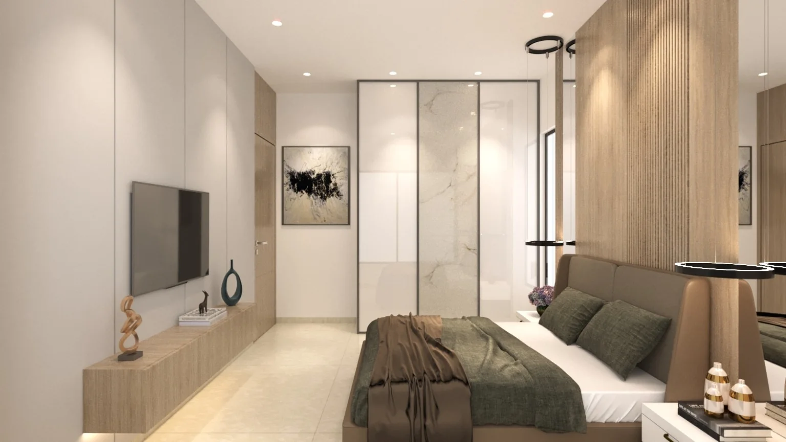
03 / KITCHEN
Practical kitchens
A parallel kitchen arrangement with a restrained palette, generous cabinetry and defined work zones.
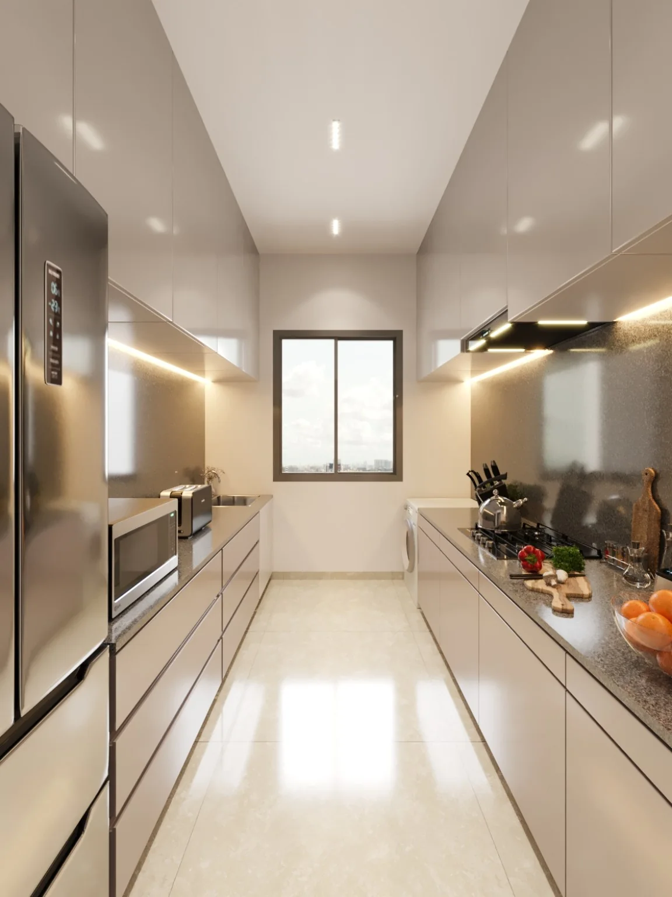
04 / BATHROOM
Considered bathrooms
Stone-look surfaces, glass shower enclosures and compact vanity solutions in a quiet material palette.
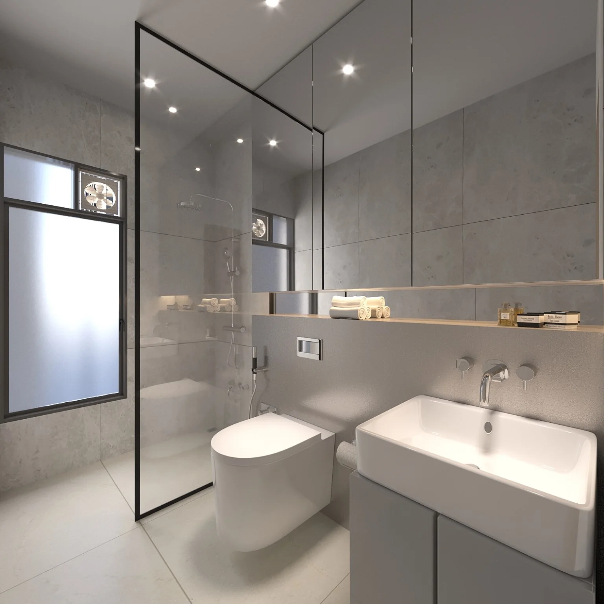
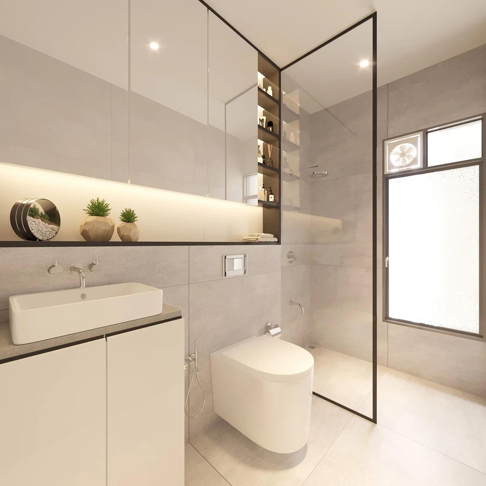
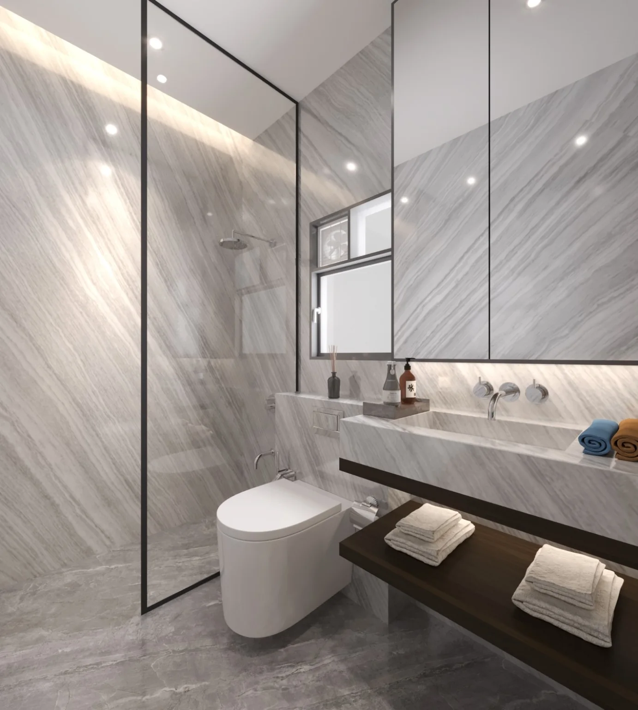
05 / FITNESS
Home fitness
A dedicated workout room planned around equipment, access and comfortable movement.
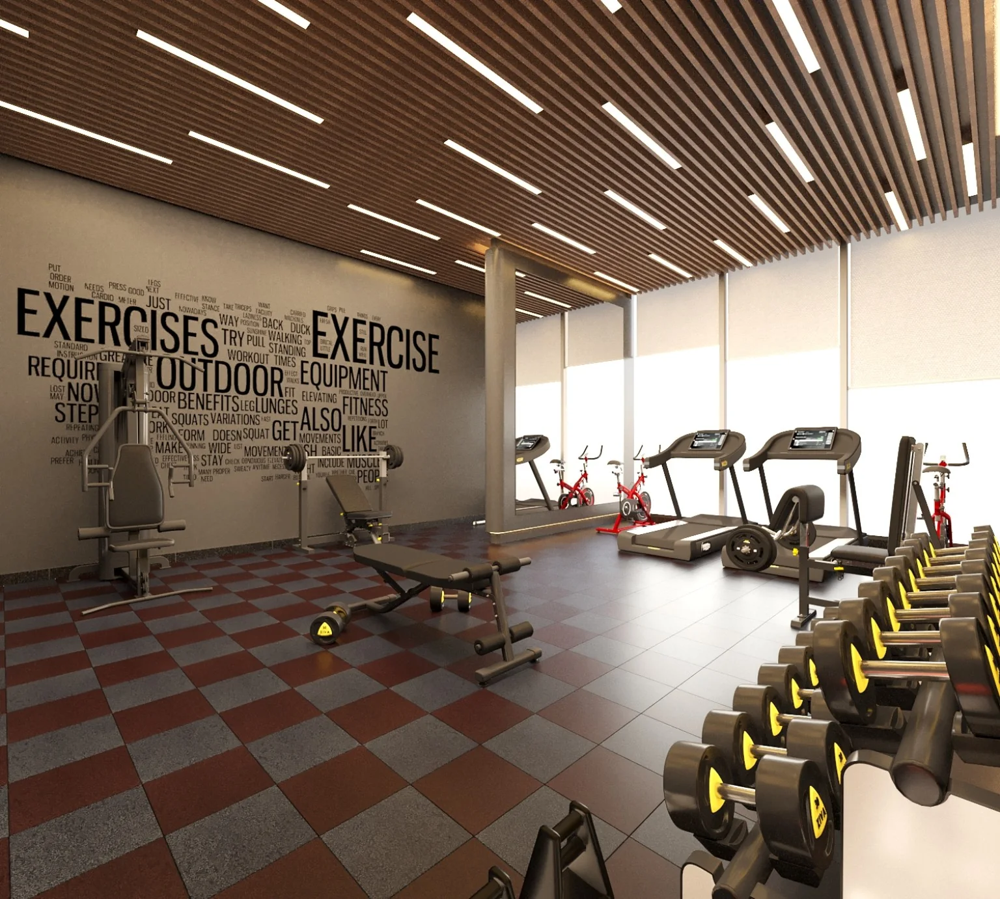
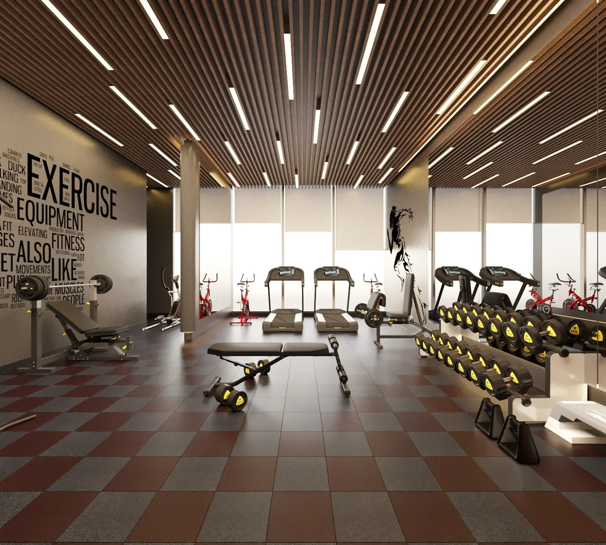
06 / RECREATION
Room to unwind
A flexible family leisure space bringing games and relaxed seating into one shared room.
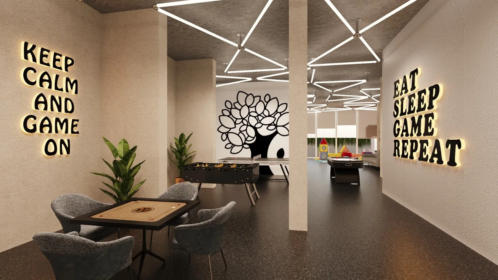
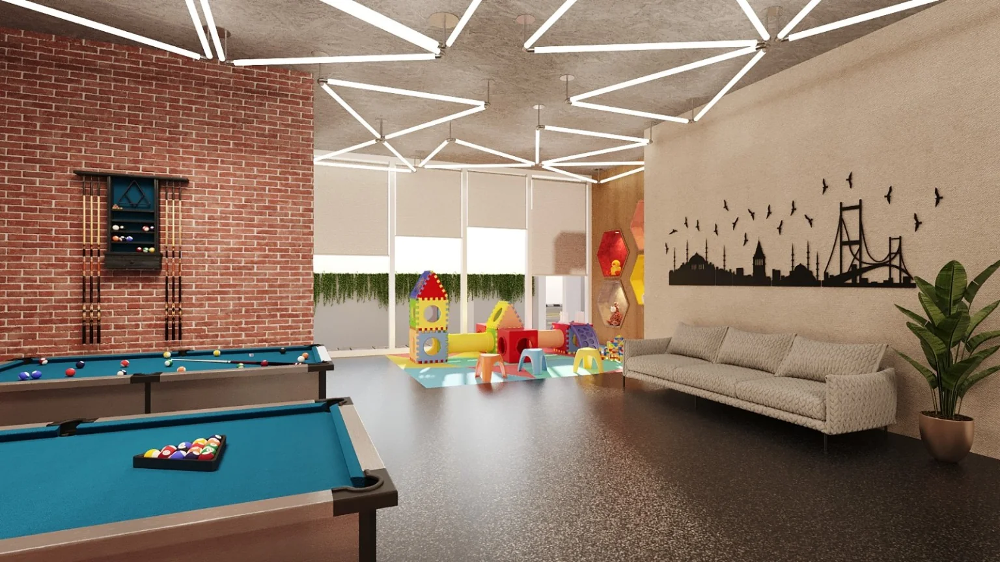